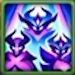
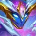
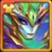
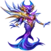
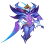

Guia do Titã Valdur: Habilidades, Skins e Times Hero Wars Alliance
- Por: Alexandre Domingos. .
E se mover um inimigo fosse tão importante quanto acertá-lo? Valdur, a Voz de Elarite, transforma o deslocamento no campo de batalha em uma oportunidade para seus aliados. Na minha visão, seu verdadeiro atrativo está em conectar um time Elarite, em vez de depender apenas dos pequenos golpes de sua invocação.
Neste guia, explico como a contagem de Elarites vivos muda uma batalha, por que o Ataque Físico merece atenção e onde eu gastaria recursos primeiro. Se você está desenvolvendo Metida, Orm, Alecto e Pallant, Valdur dá a esse investimento uma estratégia de time clara.

Comece pela diferença entre dano direto e valor para o time: Filho de Elarite empurra e puxa os inimigos, enquanto Ressonância de Elarite recompensa uma formação com mais Elarites vivos. Portanto, perder um aliado pode mudar mais do que o dano que você causa.
As prioridades abaixo são minha avaliação das mecânicas apresentadas. As notas servem como orientação de desenvolvimento, e não como um ranking baseado em taxas de vitória medidas.

📋 Índice de Valdur
Quem é Valdur em Hero Wars Alliance?
Valdur é a Voz de Elarite, um Invocador da retaguarda que interrompe habilidades inimigas e altera repetidamente a posição dos adversários. Ele completa a formação Elarite de cinco integrantes com Metida, Orm, Alecto e Pallant.

- Função: Invocador
- Elemento: Elarite
- Posição: Retaguarda
- Atributo principal: Ataque Físico
Atributos Apresentados de Valdur
- Vida: 14,936,503
- Ataque Físico: 528,271
- Defesa Extra contra Titãs de Luz e Trevas: 120,600
- Dano Extra contra Titãs de Luz e Trevas: 213,000
Estes são os valores fornecidos para o desenvolvimento do Titã, usados como referência para os exemplos de habilidades abaixo.
Prós e Contras de Valdur - Hero Wars Alliance
✅ Prós
- Empurra e puxa inimigos com uma única invocação.
- Interrompe sequências de habilidades inimigas.
- O Ataque Físico aumenta vários bônus do time.
- Habilita dano por movimento em um time Elarite completo.
- Sua invocação não pode ser atacada.
❌ Contras
- Depende muito de aliados Elarite vivos.
- O dano por movimento exige mudanças reais de posição.
- Cada golpe da invocação escala com apenas 10% do Ataque Físico.
- A invocação permanece por apenas quatro segundos.
- Os bônus da Coroa se aplicam apenas a inimigos de Luz e Trevas.
Guia de Habilidades de Valdur - Hero Wars Alliance
Entenda como a invocação de Valdur move inimigos, como Ressonância de Elarite conta aliados vivos e por que o Ataque Físico fortalece seu dano e os bônus do time.
Filho de Elarite
Descrição no jogo: Invoca Filho de Elarite no centro do time inimigo. Ele não pode se mover. Ao surgir, empurra os inimigos, causando dano. Após 4,0 segundos, Filho de Elarite desaparece, puxando os inimigos para si e causando dano. Filho de Elarite é um Titã Elarite e não pode ser atacado.

Explicação da Habilidade: Pense na invocação como uma âncora temporária na formação inimiga. Ela aparece no centro, afasta os inimigos e causa dano. Quatro segundos depois, desaparece, puxa os inimigos de volta em direção à sua posição e causa dano novamente. Ela não pode se mover nem ser atacada.
Fórmula por golpe: (10% × Ataque Físico). Com o valor apresentado de 528,271 de Ataque Físico, o dano exibido é de 52,827 ao surgir e 52,827 ao desaparecer.
Importância no PvP: O deslocamento pode interromper a execução das habilidades inimigas e cria oportunidades para o efeito de movimento com cinco Elarites. A própria invocação é um Titã Elarite, o que importa para a contagem de Elarites vivos enquanto ela estiver presente.

Ressonância de Elarite
Descrição no jogo: Passiva. Fortalece os Titãs Elarite aliados. Os bônus se acumulam e dependem do número de Titãs Elarite vivos. Com 2, concede dano extra contra Titãs de Água, Terra e Fogo. Com 3, concede defesa extra contra Titãs de Água, Terra e Fogo. Com 4, Valdur recebe 400 de Energia ao usar habilidades. Com 5, quando um Titã Elarite aliado causa dano a um inimigo, o alvo sofre um efeito por 4 segundos, recebendo dano a cada 0,5 segundo se tiver mudado de posição durante esse intervalo. Com 6, reduz o dano recebido em 50%.

Explicação da Habilidade: Conte os Titãs Elarite aliados vivos. Cada patamar adiciona um bônus e mantém os anteriores. Um aliado derrotado pode reduzir essa contagem, por isso manter a formação viva faz parte do plano ofensivo de Valdur.
- 2 Elarites vivos: Dano extra contra Titãs de Água, Terra e Fogo. Fórmula: (25% × Ataque Físico), exibido como 132,068 com os atributos apresentados.
- 3 Elarites vivos: Defesa extra contra Titãs de Água, Terra e Fogo. Fórmula: (25% × Ataque Físico), exibido como 132,068.
- 4 Elarites vivos: Valdur recebe 400 de Energia ao usar habilidades.
- 5 Elarites vivos: O dano de um Elarite aliado aplica um efeito de 4 segundos ao inimigo. A cada 0,5 segundo, verifica se o alvo mudou de posição durante o intervalo. Apenas um intervalo que cumpra essa condição causa dano por movimento.
- 6 Elarites vivos: O dano recebido é reduzido em 50%.
Dano por movimento a cada intervalo que cumpra a condição: (0,5% × Ataque Físico), exibido como 2,641 com os atributos apresentados. A fórmula escala com o Ataque Físico; os dados fornecidos não identificam o tipo de dano.
Como chegar a seis? Os cinco integrantes Elarite do time mais o Filho de Elarite vivo podem totalizar seis durante os quatro segundos de duração da invocação. Isso depende de os cinco integrantes do time permanecerem vivos; não é uma redução permanente de dano.
Importância no PvP: Pallant, Metida e Valdur movem os inimigos, favorecendo o efeito de cinco integrantes. Um alvo parado não recebe o dano desse efeito apenas porque a penalidade está ativa.
Melhor Skin para o Titã Valdur - Hero Wars Alliance
Escolha a ordem das skins de Valdur equilibrando o escalonamento por Ataque Físico e a Vida, para que seu suporte Elarite sobreviva tempo suficiente para manter os bônus ativos.

Skin Padrão
Ataque Físico: +196,800
Prioridade de Evolução para PvP: Muito Alta — 1ª — Melhora os dois golpes da invocação, os bônus de dano e defesa e o dano por movimento.
Prioridade de Evolução para Masmorra: Muito Alta — 1ª — Fortalece os mesmos efeitos de escalonamento quando sua formação disponível consegue ativá-los.

Skin Primordial+
Vida: +5,255,950
Prioridade de Evolução para PvP: Alta — 2ª — Aumenta a sobrevivência sem melhorar diretamente suas fórmulas de Ataque Físico. Antecipe essa skin se Valdur morrer antes de usar a invocação.
Prioridade de Evolução para Masmorra: Alta — 2ª — Um investimento em sobrevivência quando o desgaste impede que ele mantenha a contagem Elarite do time. Priorize-a primeiro se a sobrevivência for seu principal problema.
O total apresentado pertence à Skin Primordial+; não o some novamente como um bônus separado da skin básica.
Prioridade de Evolução dos Artefatos de Valdur - Hero Wars Alliance
Compare os artefatos de Valdur pelos bônus de time, pelo escalonamento pessoal e pelas limitações de confronto; depois, invista nos atributos que ajudam sua formação Elarite com mais frequência.
Minha ordem geral é Selo, Arma e depois Coroa. A apresentação abaixo mantém Arma, Coroa e Selo na ordem original; cada indicação de prioridade mostra a ordem de investimento.

Chamado de Zorval (Artefato de Arma)
Ataque Físico: +120,000
Chamado de Zorval fornece um bônus de Ataque Físico ao time com uma chance de ativação apresentada de 100%. Isso complementa o escalonamento por Ataque Físico de Valdur. Os valores fornecidos não especificam a duração do bônus.
Prioridade de Evolução para PvP: Alta — 2ª — O suporte ao ataque do time é valioso quando Valdur já sobrevive de forma consistente para usar suas habilidades.
Prioridade de Evolução para Masmorra: Alta — 2ª — Ajuda a ofensiva do time, enquanto o Selo fornece primeiro sobrevivência pessoal e escalonamento permanentes.

Coroa de Elarite (Artefato de Coroa)
Dano Extra contra Titãs de Luz e Trevas: +213,000
Defesa Extra contra Titãs de Luz e Trevas: +120,600
Esses atributos extras de dano e defesa se aplicam contra Titãs de Luz e Trevas. Eles não oferecem a mesma proteção contra adversários de Água, Terra, Fogo ou Elarite.
Prioridade de Evolução para PvP: Média — 3ª — Aumente sua prioridade se enfrentar Luz e Trevas com frequência; seu valor depende do elemento inimigo.
Prioridade de Evolução para Masmorra: Média — 3ª — A defesa extra pode ajudar na sobrevivência contra inimigos de Luz e Trevas, mas confira os adversários da sala antes de investir. A necessidade de sobreviver na Masmorra, por si só, não torna essa Coroa universal.

Selo de Invocação Ctônico (Artefato de Selo)
Ataque Físico: +97,500
Vida: +3,975,000
Prioridade de Evolução para PvP: Muito Alta — 1ª — Combina escalonamento permanente por Ataque Físico com Vida, favorecendo suas habilidades e sua sobrevivência em qualquer confronto.
Prioridade de Evolução para Masmorra: Muito Alta — 1ª — A Vida ajuda a mantê-lo vivo, enquanto o Ataque Físico melhora sua invocação e os bônus aplicáveis da Ressonância.
Estes são os valores do Selo de Invocação Ctônico, e não os de um Selo de Invocação padrão.
Como Enfrentar o Titã Valdur em Hero Wars Alliance
A estratégia mais clara para enfrentá-lo explora sua dependência de aliados vivos e do movimento inimigo. Estas são estratégias deduzidas de suas habilidades, e não uma lista testada de Titãs específicos que o derrotam.
- Reduza a contagem Elarite: Derrotar um integrante de uma formação com cinco Elarites reduz sua contagem natural para abaixo do patamar de dano por movimento. A invocação pode elevar a contagem temporariamente outra vez, então observe o momento em que ela aparece.
- Limite o movimento quando possível: O efeito de cinco Elarites exige uma mudança de posição em cada intervalo verificado. Estar marcado, por si só, não basta.
- Pressione fora do período da invocação: Com cinco integrantes Elarite vivos no time, o bônus defensivo da contagem de seis depende da presença de Filho de Elarite.
- Interprete corretamente os bônus elementais: Inimigos de Luz e Trevas enfrentam os bônus da Coroa; inimigos de Água, Terra e Fogo enfrentam os bônus da Ressonância com contagens de dois e três. Nenhum confronto elemental garante automaticamente uma vantagem capaz de derrotá-lo.
Eu compararia batalhas com e sem a primeira baixa Elarite antes de avaliar um time para enfrentá-lo. A posição de Valdur na retaguarda também significa que alcançá-lo depende das ferramentas reais de seleção de alvos do time atacante.
Melhor Time para o Titã Valdur - Hero Wars Alliance
 Metida |
 Alecto |
Estratégia de Composição do Time
Valdur, Metida, Orm, Alecto e Pallant fornecem cinco integrantes Elarite ao time. Pallant, Metida e Valdur movem inimigos, habilitando o dano por movimento da Ressonância depois que um Elarite aliado causa dano a um alvo. Orm e Alecto completam a contagem de cinco integrantes.
Com os cinco vivos, Filho de Elarite pode fornecer temporariamente a sexta unidade da contagem e a redução do dano recebido. Minha prioridade é manter a formação completa viva por tempo suficiente para que esses períodos de controle e defesa façam diferença.
Fraquezas e Considerações do Time
Fraco contra: Estratégias que eliminam um aliado Elarite cedo ou impedem deslocamentos consistentes podem prejudicar a principal sinergia da formação. Isso descreve uma fraqueza das mecânicas, não um confronto com derrota comprovada.
Considerações estratégicas: Os bônus dependem de Titãs vivos, e o efeito de movimento verifica mudanças de posição a cada meio segundo. Não presuma que toda marca cause dano em todos os intervalos. Teste seu desenvolvimento real antes de aumentar o investimento.
⭐ Valdur: Veredito Final de Alexandre
Minha recomendação é desenvolver Valdur quando você estiver comprometido com a formação Elarite completa. O dano direto da invocação é apenas parte do seu valor: deslocamento, bônus cumulativos e a contagem temporária do sexto Elarite dão ao time um plano de batalha coerente.
Eu começaria pela Skin Padrão e pelo Selo de Invocação Ctônico e depois desenvolveria Chamado de Zorval. Antecipe a Skin Primordial+ se ele estiver morrendo cedo e aumente a prioridade da Coroa de Elarite quando os confrontos contra Luz e Trevas justificarem isso. Invista no problema que seu time realmente enfrenta, mantendo em vista a sinergia dos cinco integrantes.
Explore novas habilidades com nossos guias em destaque!


Deixe Sua Opinião!
Gostou do nosso guia do Titã Valdur? Há algo que você não entendeu ou para o qual gostaria de sugerir alterações? Convidamos você a participar da seção de comentários na página do Blog Alexandre Games. Fique à vontade para expressar sua opinião, esclarecer suas dúvidas e compartilhar suas sugestões.
Clique no botão abaixo para começar: